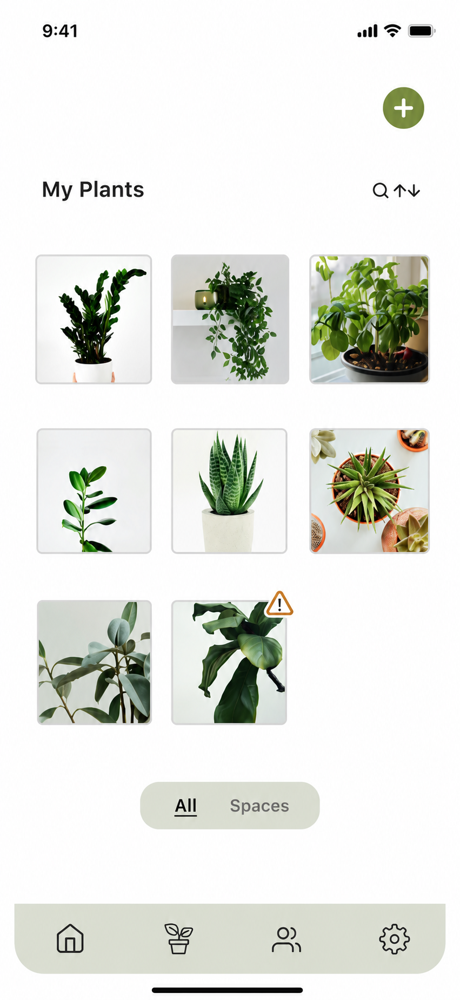
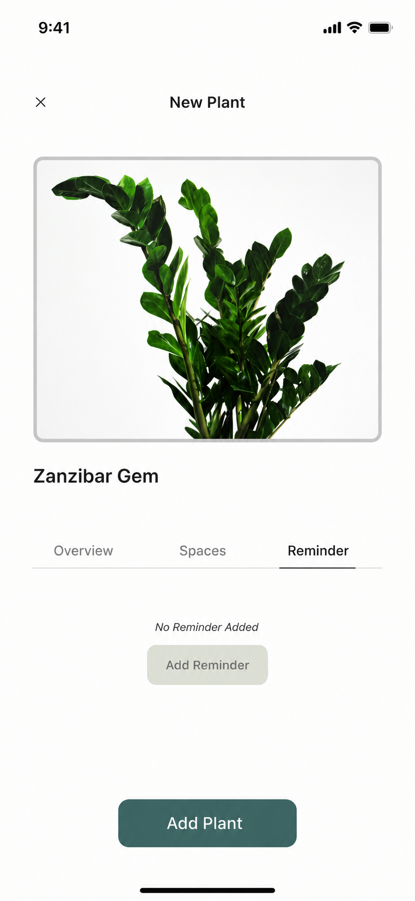
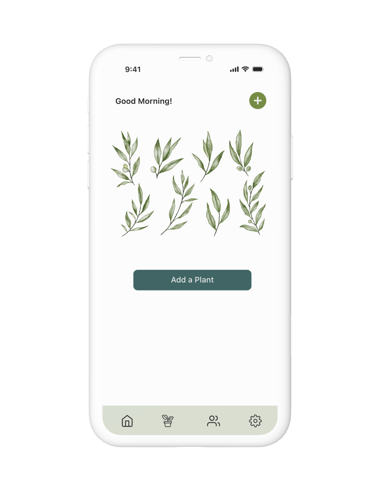
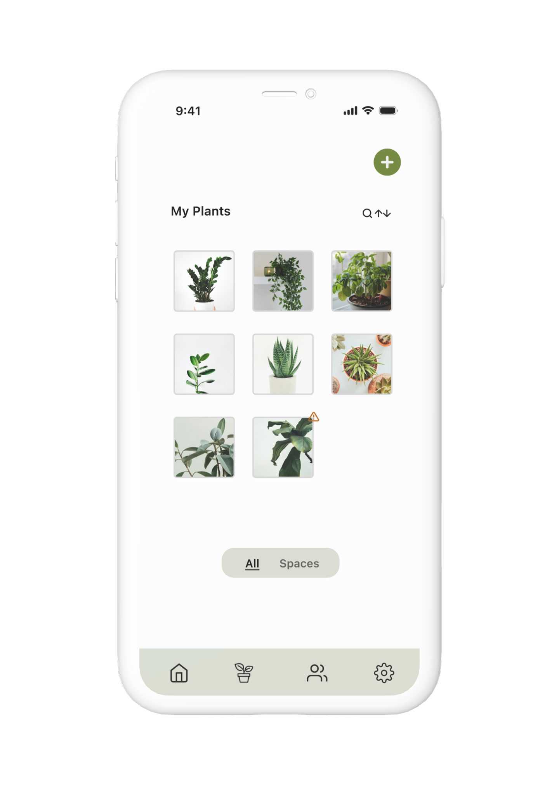
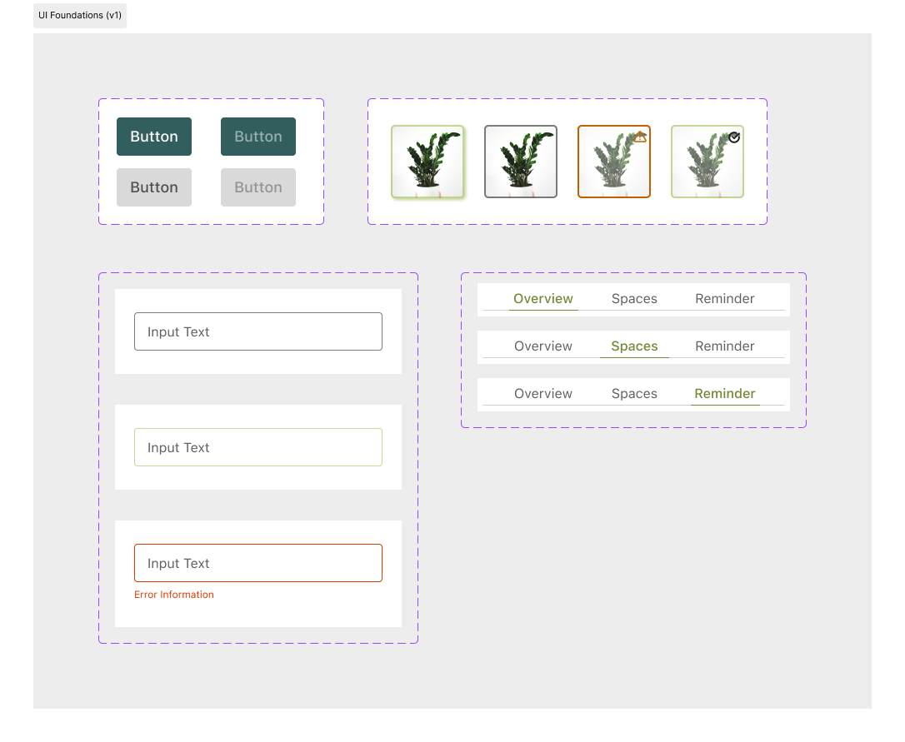
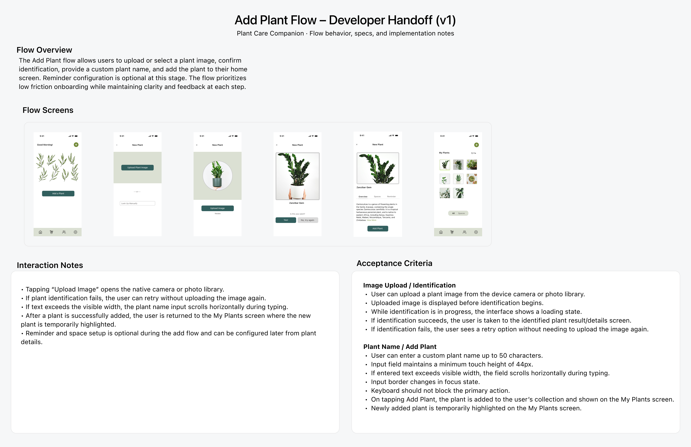

Designing a calmer, clearer way to care for plants — space-based organization, gentle reminders, and a tone that builds confidence rather than guilt.
View prototype

To understand where plant care breaks down, I gathered qualitative insights from online reviews, community discussions, and AI-simulated 1:1 interviews. Five clear patterns emerged — and they shaped everything that followed.
Plant owners feel emotionally invested — and guilty when plants die.
Generic advice isn't actionable. People want guidance for their specific plant.
Conflicting information online creates overwhelm and indecision.
Gentle nudges work better than strict schedules or rigid reminders.
Visual cues help people act — more than rules or text-heavy instructions.
With research insights in hand, I clarified the core problem and framed design questions to guide the work — focusing on routine, confidence, and simplicity.
Plant owners often struggle to maintain healthy plants due to forgetfulness, low confidence in their plant knowledge, and overwhelming or conflicting information online. Without clear guidance and supportive routines, plant care feels stressful instead of rewarding.
The problem statement pointed to four design directions — each one a question worth answering:
Make plant care feel simple and rewarding instead of stressful?
Help users build consistent routines by organizing plants by space — living room, balcony, bedroom?
Reduce overwhelm by surfacing clear next steps for each plant at the right time?
Support flexible reminders that adapt to a user's schedule and preferences?
I mapped the core flows — adding a plant, setting reminders, organizing by space — then explored layout options in wireframes before moving to high fidelity. Two decisions meaningfully shaped the final design.
Early wireframes used "Zones" to group plants by location. Feedback flagged confusion — users associated "zones" with gardening hardiness zones, a completely different concept. Renaming to "Spaces" (living room, balcony, bedroom) immediately clarified intent. I also removed a dedicated Zones screen to keep navigation lightweight.
The second decision was how to display plant details. I explored three layouts and tested them with a user — tabs kept the structure clean with core actions one tap away.
Feedback: the list felt too dense; tiles required more scanning. Tabs kept Overview, Spaces, and Reminder one tap away without cluttering the screen.
With structure validated in wireframes, I moved into high-fidelity design. The visual language leans soft and natural — to match the emotional tone of the app. Every screen is designed to reduce friction and surface one clear next action.
Core flow — Add a PlantUsers can personalize care during setup — or skip and come back later. No momentum lost either way.

Empty state — first launch

My Plants — populated
Tap through the prototype.
To keep the UI coherent and document intent clearly, I defined local styles and reusable components — buttons, text fields, plant tiles, and tabs — including state variations and acceptance criteria for the Add Plant flow.

To document intent for implementation, I wrote interaction notes and acceptance criteria for the Add Plant flow — covering edge cases, retry paths, optional steps, and post-success behaviour.

{kind=link}
{kind=link}
{kind=link}
{kind=link}
{kind=link}
{kind=link}
{kind=link}
{kind=link}
{kind=link}
{kind=link}
{kind=link}
{kind=link}
{kind=link}
{kind=link}